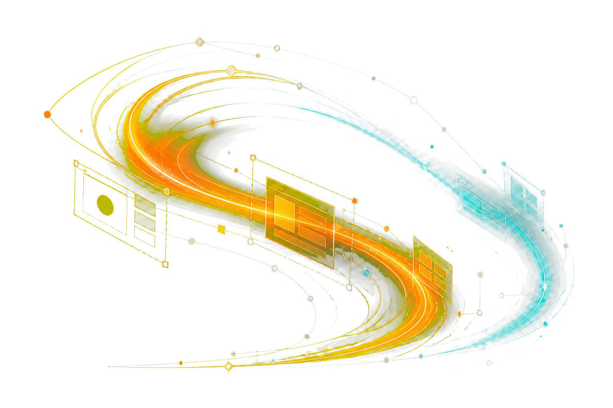
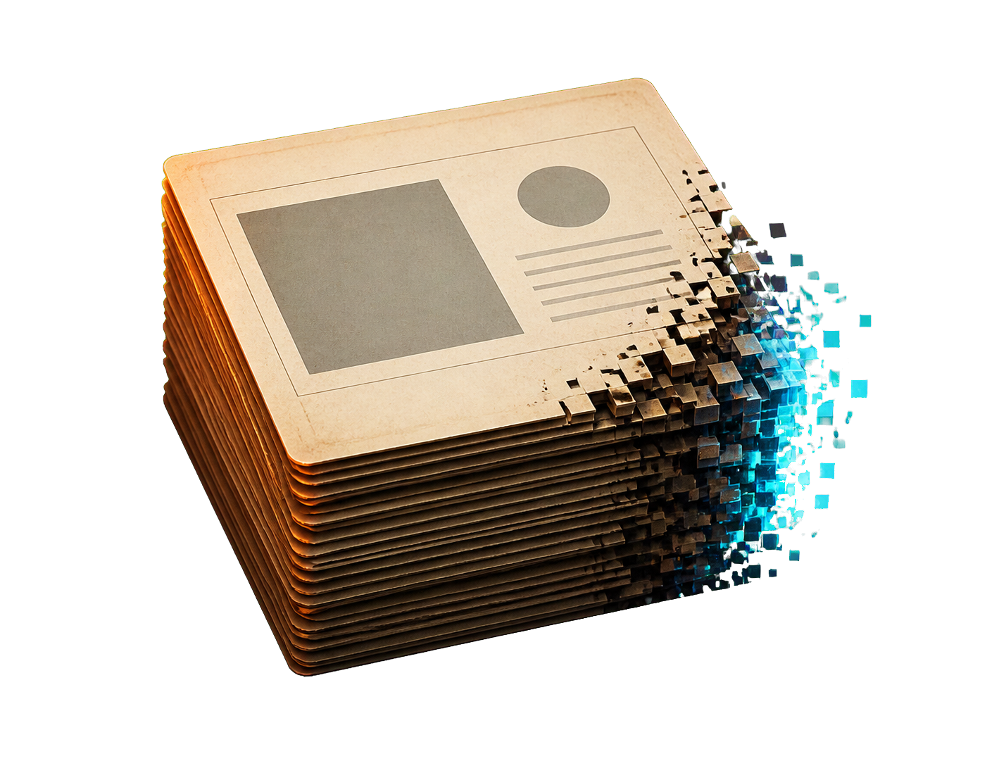
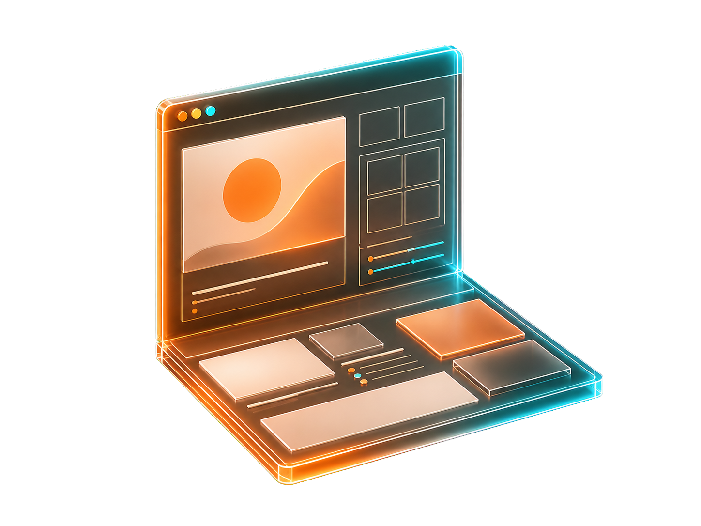
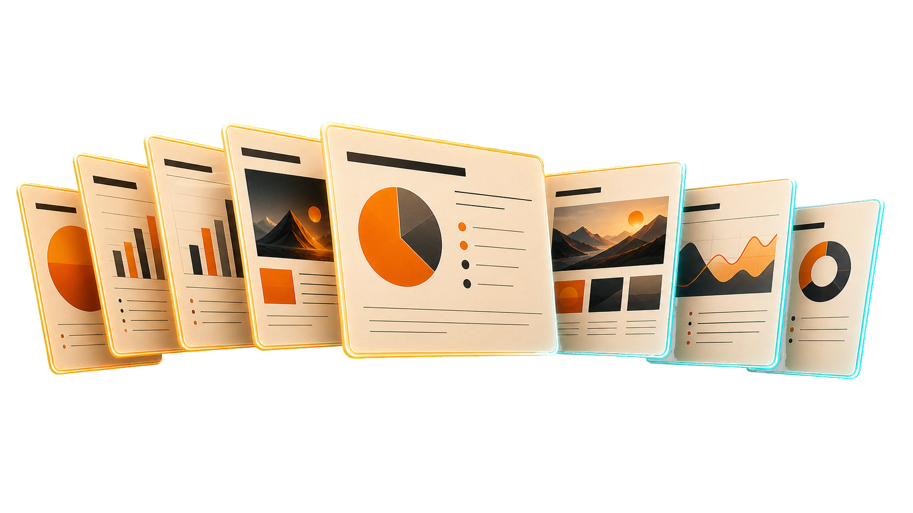
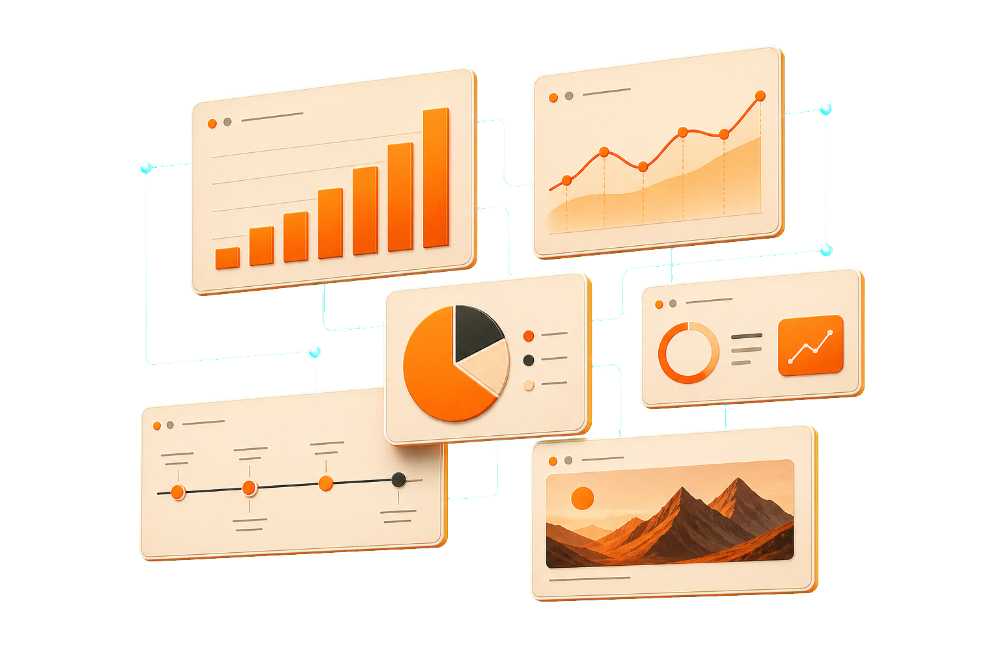
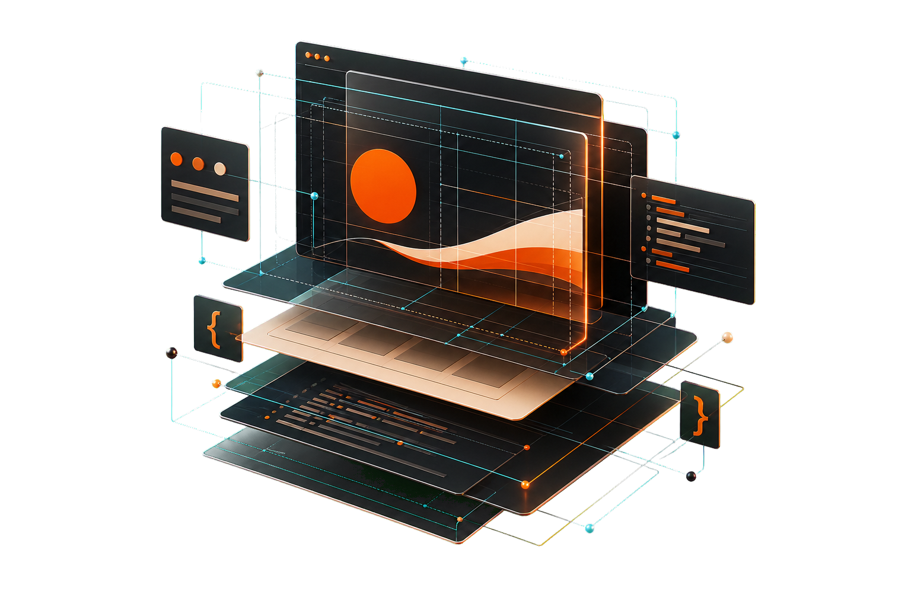
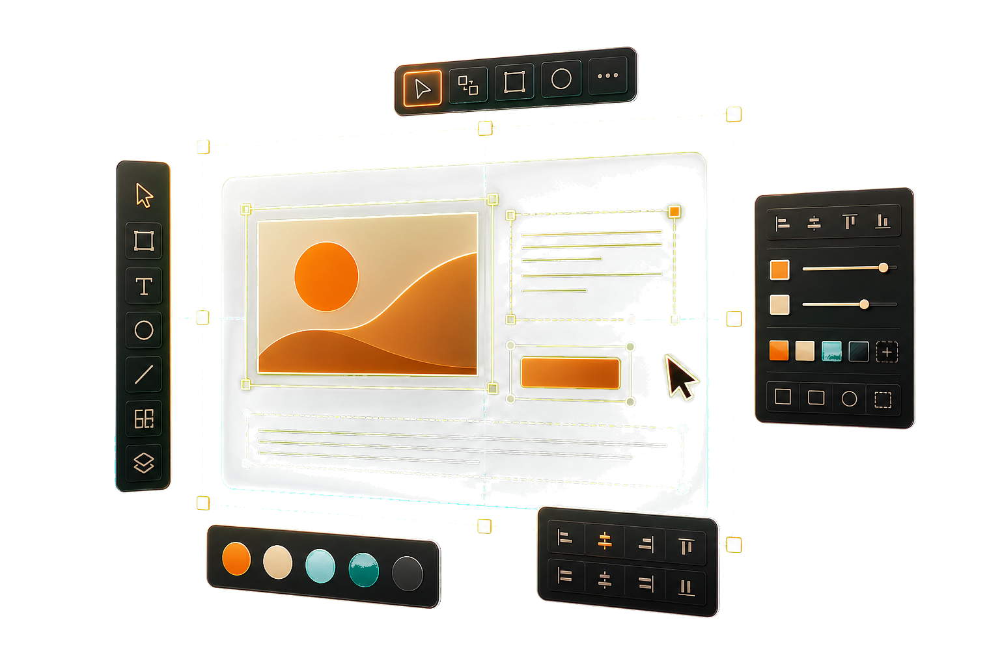
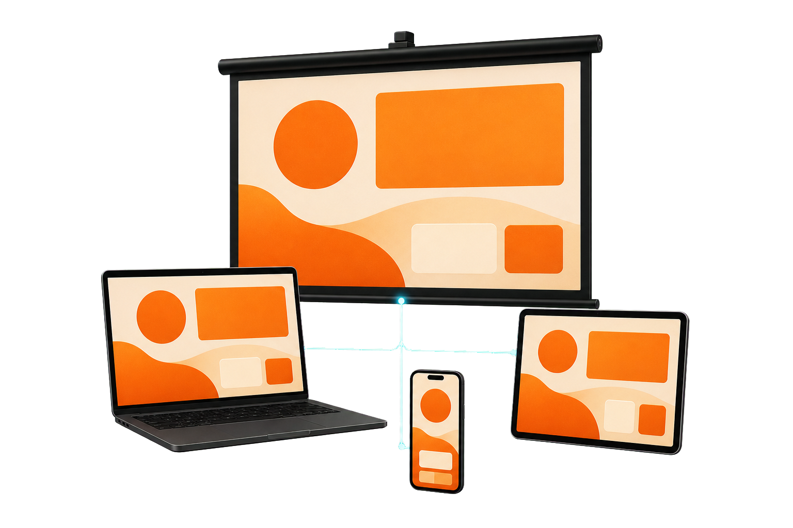
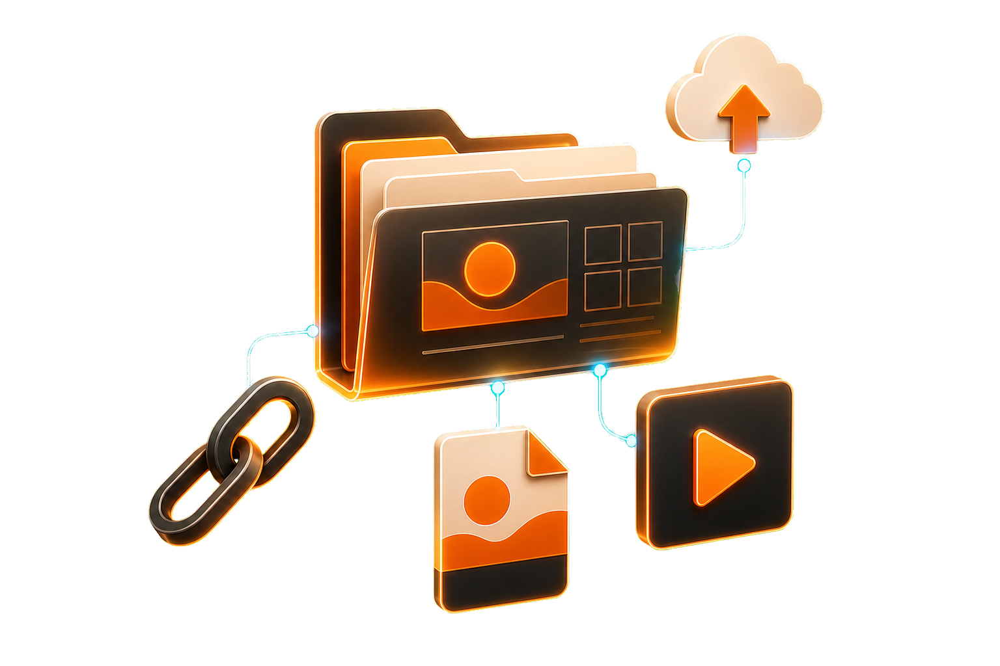
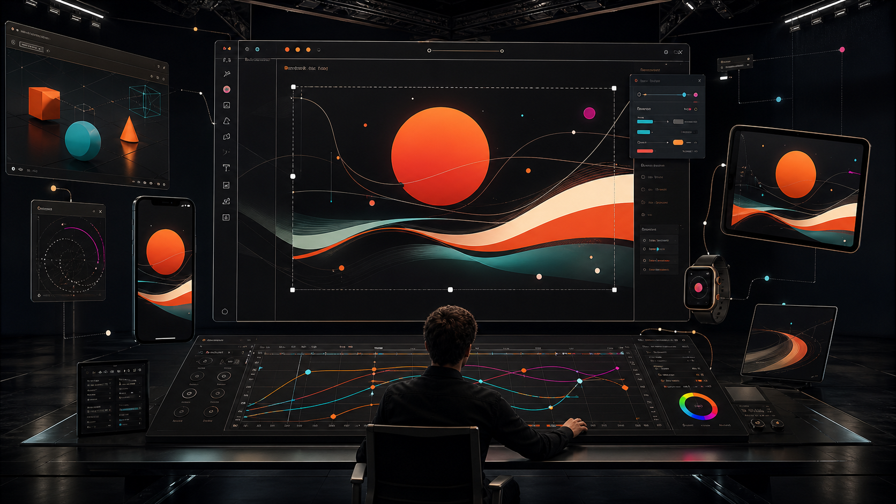

FROM SLIDES TO RUNTIME
HTML
逐渐替代 PPT
不是把页面截图塞进浏览器，而是把 PPT 的演示秩序升级成可以运行的 Web 舞台。



01PPT 页感
02Web 运行

html-replaces-ppt01 / 10
01 / 先继承What PPT got right
PRESENTATION CONTRACT
PPT 的核心不是软件，是演示秩序
一页一个观点、固定画幅、可控翻页、强层级。这些必须先保留，HTML 才谈得上替代。
01
16:9
投影、录屏、导出都稳定。
02
页级叙事
每一页只推进一个判断。
03
翻页节奏
方向键和空格就是控制器。
04
现场可讲
观众看到的仍是演示文稿。
keep the deck grammar02 / 10
02 / 标准Replacement criteria
WHEN HTML BECOMES A DECK
替代不是“更炫”，而是更完整
只要播放、编辑、素材、输出四件事都闭环，HTML 就不再只是网页。

PLAY
像 PPT 一样播放
固定画幅、翻页、进度、触控。
EDIT
像设计稿一样改
文字、图片、位置、动效都可调。
MEDIA
像网页一样承载
图表、视频、代码、交互都原生。
SHIP
像链接一样分发
本地文件夹、PDF、URL 都可用。
play / edit / media / ship03 / 10
WEB-NATIVE STAGE
PPT 是文件，
HTML 是运行时
同样是一页页讲，但底层从“静态对象”变成“浏览器渲染”：布局、动画、媒体、交互都可以按场景运行。
01CSS 控制版式
02JS 控制播放
03素材分层进入
fixed 1920 × 1080
keyboard / touch / export
runtime is the new presentation container04 / 10
03 / 对比PPT file vs HTML runtime
PPT FILE
封闭交付
适合把内容装进一个文件，但素材、动效和编辑能力大多被锁进软件生态。
LIMIT媒体能力有限
LIMIT协作依赖软件
HTML RUNTIME
开放运行
演示仍然是一页页播放，但每一页都可以承载真实 Web 能力。
GAIN素材和组件分层
GAIN本地或 URL 分发

replacement starts when the behavior is better05 / 10
04 / 设计方式Image objects, not page screenshots
DESIGN THE LAYERS
图片不负责整页，
图片只负责质感
页面结构、标题、标注、动效都由 HTML 负责；生成图只作为可移动的舞台道具。
01 / generated object
02 / html layout
03 / css motion
asset role is explicit06 / 10
05 / 编辑PPT-like control, browser-native editing

select / drag / replace image
EDIT AFTER PRESENTING
替代 PPT，必须能改
按 E 进入编辑：选中文本、替换图片、拖动素材、撤销、保存。它不是截图，是可操作的 DOM。
E打开编辑模式
⌘Z撤销修改
SAVE下载干净 HTML
present first, edit directly07 / 10
06 / 输出One deck, many surfaces
DISTRIBUTION
一套演示，
不止一个出口
PPT 的强项是“带走文件”；HTML 的强项是同时可以带走文件、导出 PDF、发链接、上大屏。


LOCAL打开 index.html
SCREEN浏览器投影
PDF静态归档
URL部署成链接
FOLDER素材一起携带
MOBILE设备自适应观看
local / projector / pdf / url08 / 10
PPT-LIKE WORKFLOW
做法仍然像做 PPT，只是底座换成 Web
从大纲到页面，从页面到编辑，再到导出和发布，用户感知上仍是一套演示文稿流程。

STEP 01
写主题和大纲
STEP 02
生成 PPT 式页面
STEP 03
浏览器里直接改
STEP 04
导出或发布链接
draft / edit / present / share09 / 10
THE TAKEAWAY
保留 PPT 的手感，
换成 Web 的底座
当 HTML 稳定做到翻页、版式、动效、编辑、导出和分享，它就不再只是网页，而是下一代演示文稿。
<deck> one idea per slide
<motion> controlled by code
<share> open anywhere
NEXT像 PPT 一样带走，像网页一样运行
html gradually replaces ppt10 / 10